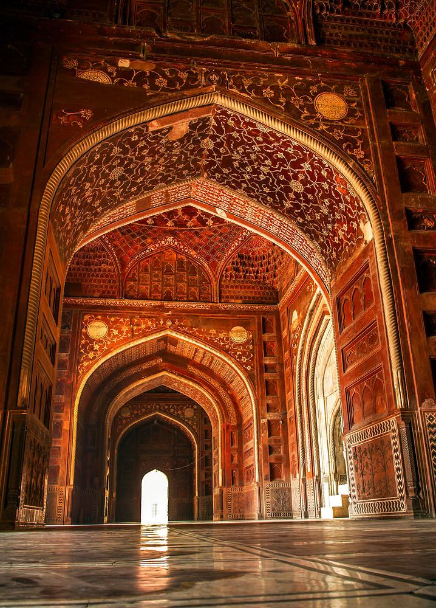

„Indyjska świątynia miłości” wzniesiona w XVII w. przez Szahdżahana z dynastii Wielkich Mogołów to sztandarowa atrakcja, która zdominowała praktycznie wszystkie przewodniki turystyczne o Indiach. Zbudowane z białego marmuru mauzoleum stanowi swoisty hołd i dar jaki zrozpaczony małżonek podarował swojej przedwcześnie zmarłej żonie – Mumtaz Mahal. Księżniczka przeżyła tylko 36 lat. Zmarła podczas porodu ich czternastego dziecka. Po śmierci małżonki pogrążony w żałobie Szahdżahan rozkazał odnaleźć najwspanialszych architektów i zlecił im zbudowanie najpiękniejszego na świecie grobowca. Tak też się stało. Dzięki ogromnej sile miłości po dziś dzień możemy oglądać i zachwycać się tą niezwykle monumentalną budowlą wzniesioną na podmokłym i mglistym terenie nad brzegiem rzeki Jamuny.
